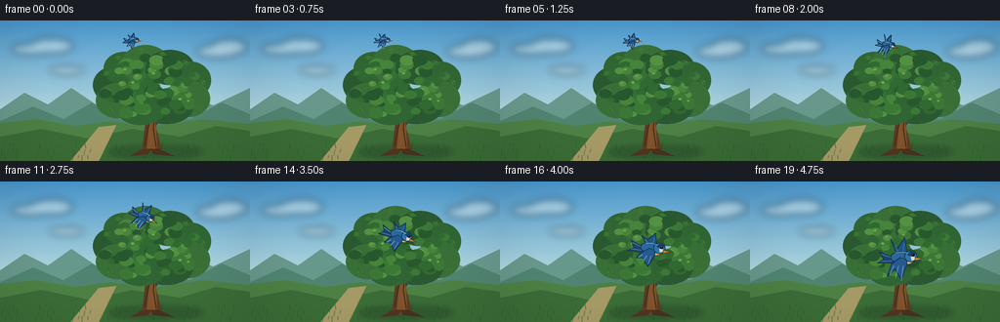
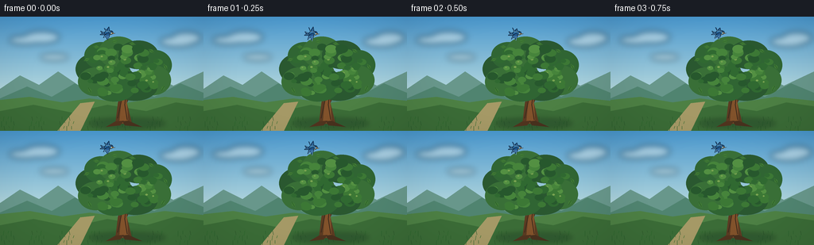

CODING AGENTS AS PIXEL WORLD MODELS
traex/GPT-5.6-Sol · dynamic_spatial_relationship_0046
点击播放 · 原生 RGB 像素
逐轮保存的候选
回放视频、检查图与代码变化。
每份候选均可单独播放。实际图片检查记录在下方工具轨迹中。
候选 01播放与检查图
点击播放 · 原生 RGB 像素


展开代码变化
--- 上一保存版本
+++ 本次保存版本
@@ -0,0 +1,220 @@
+from pathlib import Path
+import math
+import numpy as np
+from PIL import Image, ImageDraw, ImageFilter
+import artifact_io
+
+W,H,N = 256,144,20
+SS=4
+SW,SH=W*SS,H*SS
+rng=np.random.default_rng(4601)
+
+def sc(v): return int(round(v*SS))
+def pts(seq): return [(sc(x),sc(y)) for x,y in seq]
+
+def ellipse(d, box, fill, outline=None, width=1):
+ d.ellipse(tuple(sc(v) for v in box), fill=fill, outline=outline, width=sc(width) if outline else 1)
+def polygon(d, p, fill, outline=None, width=1):
+ d.polygon(pts(p), fill=fill)
+ if outline: d.line(pts(p+[p[0]]), fill=outline, width=sc(width), joint='curve')
+def line(d,p,fill,width): d.line(pts(p),fill=fill,width=sc(width),joint='curve')
+
+def smoothstep(x):
+ x=max(0,min(1,x)); return x*x*(3-2*x)
+
+# static random leaf data, sorted so upper/smaller detail overlays
+leaf_clusters=[]
+for i in range(94):
+ # points in an irregular broad oak crown
+ a=rng.uniform(0,math.tau)
+ r=math.sqrt(rng.uniform())
+ x=155 + math.cos(a)*r*51
+ y=69 + math.sin(a)*r*31
+ # suppress corners, and create uneven crown top
+ if ((x-155)/52)**2 + ((y-69)/33)**2 > .92: continue
+ rad=rng.uniform(3.2,7.8)
+ leaf_clusters.append((y,x,rad,rng.integers(0,5),rng.uniform(-1.3,1.3)))
+# extra distinct canopy lobes
+lobes=[(117,66,22,19),(127,49,21,17),(149,45,25,20),(174,48,25,18),(195,61,21,19),
+ (192,80,23,19),(170,88,28,18),(144,88,27,19),(120,82,22,18)]
+
+def background(frame):
+ # Rich calm sky gradient
+ arr=np.zeros((SH,SW,3),dtype=np.uint8)
+ top=np.array([73,151,205.]); bot=np.array([206,231,225.])
+ for yy in range(SH):
+ y=yy/(SH-1); q=min(1,y/0.82)
+ c=top*(1-q)+bot*q
+ arr[yy,:,:]=np.clip(c,0,255)
+ im=Image.fromarray(arr,'RGB')
+ # hazy clouds
+ cloud=Image.new('RGBA',(SW,SH),(0,0,0,0)); cd=ImageDraw.Draw(cloud)
+ for b in [(11,24,53,35),(30,18,75,34),(201,25,245,38),(216,19,253,35),(50,47,86,55)]:
+ ellipse(cd,b,(255,255,247,105))
+ cloud=cloud.filter(ImageFilter.GaussianBlur(sc(4)))
+ im=Image.alpha_composite(im.convert('RGBA'),cloud)
+ d=ImageDraw.Draw(im)
+ # distant hills with atmospheric layering
+ polygon(d,[(0,91),(25,74),(49,86),(73,69),(101,88),(126,73),(158,92),(187,72),(218,87),(256,69),(256,144),(0,144)],(104,151,139,255))
+ polygon(d,[(0,103),(34,88),(65,101),(94,84),(128,104),(162,89),(194,101),(227,84),(256,96),(256,144),(0,144)],(80,132,112,255))
+ # meadow
+ polygon(d,[(0,105),(37,101),(78,108),(113,103),(157,109),(207,101),(256,106),(256,144),(0,144)],(77,128,68,255))
+ polygon(d,[(0,119),(42,111),(91,121),(135,111),(184,119),(221,108),(256,113),(256,144),(0,144)],(59,108,55,255))
+ # warm path behind tree
+ polygon(d,[(72,144),(101,109),(119,107),(101,144)],(165,153,102,140))
+ # fine grass silhouettes
+ for i in range(70):
+ x=(i*37)%257; base=128+(i*17)%18; ht=2+(i*11)%6
+ col=(42,86+(i%3)*8,43,210)
+ line(d,[(x,base),(x-1+(i%3),base-ht)],col,0.55)
+ return im
+
+def draw_tree(im,frame):
+ # soft ground shadow
+ shadow=Image.new('RGBA',(SW,SH),(0,0,0,0)); sd=ImageDraw.Draw(shadow)
+ ellipse(sd,(111,128,208,141),(21,50,34,80))
+ shadow=shadow.filter(ImageFilter.GaussianBlur(sc(3)))
+ im.alpha_composite(shadow)
+ d=ImageDraw.Draw(im)
+ # rear branches, graceful forked structure
+ branches=[([(155,132),(154,96),(145,70)],9), ([(156,111),(171,79),(187,62)],5),
+ ([(151,100),(133,76),(119,65)],4), ([(158,96),(162,67),(155,50)],4),
+ ([(166,85),(185,76),(199,73)],3), ([(142,84),(126,78),(110,80)],3)]
+ for p,w in branches:
+ line(d,p,(80,55,34,255),w)
+ # narrow sunward highlight
+ off=[(x-0.8,y) for x,y in p]
+ line(d,off,(125,84,47,220),max(.7,w*.22))
+ # trunk tapered polygon and bark
+ polygon(d,[(145,135),(149,103),(148,84),(153,62),(161,64),(161,89),(159,107),(166,135)],(91,59,34,255))
+ polygon(d,[(150,134),(153,102),(153,80),(157,66),(160,67),(158,94),(160,116),(161,135)],(129,82,43,255))
+ line(d,[(148,128),(153,105),(152,86)],(61,43,29,220),1)
+ line(d,[(160,130),(157,111),(159,92)],(57,40,27,180),1)
+
+ # broad base silhouette lobes
+ for i,(x,y,rx,ry) in enumerate(lobes):
+ shade=[(42,88,48,255),(48,101,51,255),(57,111,55,255)][i%3]
+ ellipse(d,(x-rx,y-ry,x+rx,y+ry),shade)
+ # leaf clusters with slight coherent breeze, not distracting
+ sway=0.45*math.sin(frame*.34)
+ palette=[(39,88,45,255),(48,105,49,255),(60,120,53,255),(70,132,59,255),(83,144,66,255)]
+ for y,x,r,ci,jit in leaf_clusters:
+ dx=sway*(0.15+(90-y)/70)+jit*.08
+ col=palette[int(ci)]
+ ellipse(d,(x-r+dx,y-r*.70,x+r+dx,y+r*.70),col)
+ # leaf glint on top-left edge
+ if ci>=2 and int(x+y)%3==0:
+ ellipse(d,(x-r*.45+dx,y-r*.38,x+r*.05+dx,y-r*.04),(123,164,82,145))
+ # a few crisp individual leaves along rim
+ rim=[(109,54,-25),(121,38,5),(144,31,-15),(166,34,15),(190,43,35),(208,63,60),(205,90,120),(113,93,-120)]
+ for x,y,a in rim:
+ ca,sa=math.cos(math.radians(a)),math.sin(math.radians(a))
+ p=[]
+ for lx,ly in [(-4,0),(0,-2),(5,0),(0,2)]: p.append((x+lx*ca-ly*sa,y+lx*sa+ly*ca))
+ polygon(d,p,(64,122,53,255))
+ line(d,[(x-3*ca,y-3*sa),(x+4*ca,y+4*sa)],(35,81,40,210),.45)
+ # foreground trunk root details
+ polygon(d,[(145,132),(133,139),(151,137),(156,131)],(80,52,31,255))
+ polygon(d,[(161,131),(179,139),(157,137),(154,132)],(72,49,30,255))
+
+def trans(local,cx,cy,s,ang):
+ ca,sa=math.cos(ang),math.sin(ang)
+ return [(cx+s*(x*ca-y*sa),cy+s*(x*sa+y*ca)) for x,y in local]
+
+def draw_bird(im,cx,cy,s,ang,wing_phase,depth):
+ # Every bird element is on this topmost layer: overlap unambiguously signals 'in front'.
+ layer=Image.new('RGBA',(SW,SH),(0,0,0,0)); d=ImageDraw.Draw(layer)
+ # gentle cast shadow on foliage, offset lower-right at final depth
+ if depth>.35:
+ sh=Image.new('RGBA',(SW,SH),(0,0,0,0)); shd=ImageDraw.Draw(sh)
+ ellipse(shd,(cx-10*s+2,cy-5*s+3,cx+11*s+2,cy+6*s+3),(16,37,27,int(65*depth)))
+ sh=sh.filter(ImageFilter.GaussianBlur(sc(3.0*s)))
+ im.alpha_composite(sh)
+ # coordinates in bird-local frame, beak points right
+ # tail behind body
+ tail=trans([(-8,0),(-20,-4),(-16,2),(-21,6),(-6,5)],cx,cy,s,ang)
+ polygon(d,tail,(28,67,112,255), (20,47,75,255),.7)
+ line(d,trans([(-18,-2),(-7,1)],cx,cy,s,ang),(100,155,189,230),.65)
+ line(d,trans([(-18,4),(-7,3)],cx,cy,s,ang),(100,155,189,230),.65)
+ # wings: flap changes vertical reach while maintaining recognizable shape
+ flap=math.sin(wing_phase)
+ up=9+8*abs(flap)
+ # far wing first
+ far=trans([(-4,-1),(-11,-up),(-5,-7),(1,-15-3*flap),(4,-4),(3,1)],cx,cy,s,ang)
+ polygon(d,far,(31,84,137,255),(18,49,82,255),.8)
+ # pale feather streaks on far wing
+ line(d,trans([(-3,-3),(-7,-up*.72)],cx,cy,s,ang),(115,169,201,220),.6)
+ line(d,trans([(0,-3),(1,-11-2*flap)],cx,cy,s,ang),(89,149,189,210),.55)
+ # body oval built as smooth sampled contour
+ body=[]
+ for k in range(28):
+ a=math.tau*k/28
+ body.append((math.cos(a)*10,math.sin(a)*5.4))
+ polygon(d,trans(body,cx,cy,s,ang),(41,104,158,255),(17,45,69,255),.8)
+ # warm cream breast creates readability
+ breast=[]
+ for k in range(18):
+ a=math.pi*(-.48+1.15*k/17)
+ breast.append((4.0+5.6*math.cos(a),1.1+4.0*math.sin(a)))
+ breast += [(1.0,4.6),(0.0,1.5)]
+ polygon(d,trans(breast,cx,cy,s,ang),(229,183,100,255))
+ # near wing drapes down/back; prominently animated
+ dn=10+8*abs(flap)
+ near=trans([(-2,0),(-9,6),(-12,dn),(-6,10),(0,17+2*flap),(4,6),(4,1)],cx,cy,s,ang)
+ polygon(d,near,(37,89,144,255),(15,43,72,255),.85)
+ # separated flight feathers
+ for q in range(3):
+ x=-7+q*4
+ line(d,trans([(x,7),(x-3+q, dn-1+q*2)],cx,cy,s,ang),(112,164,198,235),.7)
+ # head and cap
+ ellipse(d,(cx,cy,cx,cy),(0,0,0,0)) # noop keeps helper local
+ head=[]
+ for k in range(24):
+ a=math.tau*k/24; head.append((7+5.3*math.cos(a),-1.5+4.8*math.sin(a)))
+ polygon(d,trans(head,cx,cy,s,ang),(48,117,171,255),(16,43,65,255),.75)
+ cap=trans([(4,-4),(7,-6),(11,-5),(10,-2),(5,-2)],cx,cy,s,ang)
+ polygon(d,cap,(25,64,110,255))
+ # face patch, eye, beak
+ cheek=trans([(7,-1),(10,-2),(11,1),(8,2)],cx,cy,s,ang)
+ polygon(d,cheek,(226,218,178,255))
+ beak=trans([(11,-1),(18,0),(11,2)],cx,cy,s,ang)
+ polygon(d,beak,(208,130,47,255),(58,43,30,255),.55)
+ ex,ey=trans([(9,-2.7)],cx,cy,s,ang)[0]
+ ellipse(d,(ex-1.25*s,ey-1.25*s,ex+1.25*s,ey+1.25*s),(8,13,14,255))
+ ellipse(d,(ex-.42*s,ey-.72*s,ex+.1*s,ey-.2*s),(255,255,245,255))
+ # slight rim highlight
+ line(d,trans([(-6,-4),(0,-5),(5,-4)],cx,cy,s,ang),(145,195,220,220),.7)
+ im.alpha_composite(layer)
+
+def make_frame(i):
+ im=background(i)
+ draw_tree(im,i)
+ t=i/(N-1)
+ # Story staging: first second stays above, then smooth forward swoop.
+ if t<0.22:
+ u=0
+ hover=t/0.22
+ else:
+ u=smoothstep((t-0.22)/0.78)
+ hover=1
+ # Bezier-like arc from clearly above canopy to tree's foreground center
+ x=(1-u)*136 + u*156 + 3.5*math.sin(math.pi*u)
+ y=(1-u)*20.5 + u*78 - 10*math.sin(math.pi*u)
+ if u==0:
+ x += 1.5*math.sin(i*.8); y += .8*math.sin(i*1.1)
+ s=.48 + .72*u # approaching viewer gives strong depth cue
+ # point downward during dive, level out in front
+ ang=math.radians(3 + 25*math.sin(math.pi*u))
+ phase=i*1.75+.4
+ draw_bird(im,x,y,s,ang,phase,u)
+ # subtle cinematic vignette
+ a=np.asarray(im.convert('RGB')).astype(np.float32)
+ yy,xx=np.mgrid[0:SH,0:SW]
+ rr=((xx-SW/2)/(SW*.72))**2+((yy-SH/2)/(SH*.82))**2
+ vig=np.clip(1-0.13*np.maximum(0,rr-.22),.82,1)[:,:,None]
+ a=np.clip(a*vig,0,255).astype(np.uint8)
+ out=Image.fromarray(a).resize((W,H),Image.Resampling.LANCZOS)
+ return np.asarray(out,dtype=np.uint8)
+
+frames=np.stack([make_frame(i) for i in range(N)])
+artifact_io.save(frames,Path(__file__).resolve().parent)
可观测工具轨迹
实际执行的命令与返回图片。
命令 1exit 0
/bin/bash -lc "cat prompt.txt && printf '\\n---RULES---\\n' && cat GENERATION_RULES.md && printf '\\n---SPEC---\\n' && cat task_spec.json"
命令 2exit 0
/bin/bash -lc "find . -maxdepth 2 -type f -printf '%p\\n' | sort"
命令 3exit 0
/bin/bash -lc 'cat artifact_io.py'
命令 4exit 0
/bin/bash -lc "cat > generate.py <<'PY'
from pathlib import Path
import math
import numpy as np
from PIL import Image, ImageDraw, ImageFilter
import artifact_io
W,H,N = 256,144,20
SS=4
SW,SH=W*SS,H*SS
rng=np.random.default_rng(4601)
def sc(v): return int(round(v*SS))
def pts(seq): return [(sc(x),sc(y)) for x,y in seq]
def ellipse(d, box, fill, outline=None, width=1):
d.ellipse(tuple(sc(v) for v in box), fill=fill, outline=outline, width=sc(width) if outline else 1)
def polygon(d, p, fill, outline=None, width=1):
d.polygon(pts(p), fill=fill)
if outline: d.line(pts(p+[p[0]]), fill=outline, width=sc(width), joint='curve')
def line(d,p,fill,width): d.line(pts(p),fill=fill,width=sc(width),joint='curve')
def smoothstep(x):
x=max(0,min(1,x)); return x*x*(3-2*x)
# static random leaf data, sorted so upper/smaller detail overlays
leaf_clusters=[]
for i in range(94):
# points in an irregular broad oak crown
a=rng.uniform(0,math.tau)
r=math.sqrt(rng.uniform())
x=155 + math.cos(a)*r*51
y=69 + math.sin(a)*r*31
# suppress corners, and create uneven crown top
if ((x-155)/52)**2 + ((y-69)/33)**2 > .92: continue
rad=rng.uniform(3.2,7.8)
leaf_clusters.append((y,x,rad,rng.integers(0,5),rng.uniform(-1.3,1.3)))
# extra distinct canopy lobes
lobes=[(117,66,22,19),(127,49,21,17),(149,45,25,20),(174,48,25,18),(195,61,21,19),
(192,80,23,19),(170,88,28,18),(144,88,27,19),(120,82,22,18)]
def background(frame):
# Rich calm sky gradient
arr=np.zeros((SH,SW,3),dtype=np.uint8)
top=np.array([73,151,205.]); bot=np.array([206,231,225.])
for yy in range(SH):
y=yy/(SH-1); q=min(1,y/0.82)
c=top*(1-q)+bot*q
arr[yy,:,:]=np.clip(c,0,255)
im=Image.fromarray(arr,'RGB')
# hazy clouds
cloud=Image.new('RGBA',(SW,SH),(0,0,0,0)); cd=ImageDraw.Draw(cloud)
for b in [(11,24,53,35),(30,18,75,34),(201,25,245,38),(216,19,253,35),(50,47,86,55)]:
ellipse(cd,b,(255,255,247,105))
cloud=cloud.filter(ImageFilter.GaussianBlur(sc(4)))
im=Image.alpha_composite(im.convert('RGBA'),cloud)
d=ImageDraw.Draw(im)
# distant hills with atmospheric layering
polygon(d,[(0,91),(25,74),(49,86),(73,69),(101,88),(126,73),(158,92),(187,72),(218,87),(256,69),(256,144),(0,144)],(104,151,139,255))
polygon(d,[(0,103),(34,88),(65,101),(94,84),(128,104),(162,89),(194,101),(227,84),(256,96),(256,144),(0,144)],(80,132,112,255))
# meadow
polygon(d,[(0,105),(37,101),(78,108),(113,103),(157,109),(207,101),(256,106),(256,144),(0,144)],(77,128,68,255))
polygon(d,[(0,119),(42,111),(91,121),(135,111),(184,119),(221,108),(256,113),(256,144),(0,144)],(59,108,55,255))
# warm path behind tree
polygon(d,[(72,144),(101,109),(119,107),(101,144)],(165,153,102,140))
# fine grass silhouettes
for i in range(70):
x=(i*37)%257; base=128+(i*17)%18; ht=2+(i*11)%6
col=(42,86+(i%3)*8,43,210)
line(d,[(x,base),(x-1+(i%3),base-ht)],col,0.55)
return im
def draw_tree(im,frame):
# soft ground shadow
shadow=Image.new('RGBA',(SW,SH),(0,0,0,0)); sd=ImageDraw.Draw(shadow)
ellipse(sd,(111,128,208,141),(21,50,34,80))
shadow=shadow.filter(ImageFilter.GaussianBlur(sc(3)))
im.alpha_composite(shadow)
d=ImageDraw.Draw(im)
# rear branches, graceful forked structure
branches=[([(155,132),(154,96),(145,70)],9), ([(156,111),(171,79),(187,62)],5),
([(151,100),(133,76),(119,65)],4), ([(158,96),(162,67),(155,50)],4),
([(166,85),(185,76),(199,73)],3), ([(142,84),(126,78),(110,80)],3)]
for p,w in branches:
line(d,p,(80,55,34,255),w)
# narrow sunward highlight
off=[(x-0.8,y) for x,y in p]
line(d,off,(125,84,47,220),max(.7,w*.22))
# trunk tapered polygon and bark
polygon(d,[(145,135),(149,103),(148,84),(153,62),(161,64),(161,89),(159,107),(166,135)],(91,59,34,255))
polygon(d,[(150,134),(153,102),(153,80),(157,66),(160,67),(158,94),(160,116),(161,135)],(129,82,43,255))
line(d,[(148,128),(153,105),(152,86)],(61,43,29,220),1)
line(d,[(160,130),(157,111),(159,92)],(57,40,27,180),1)
# broad base silhouette lobes
for i,(x,y,rx,ry) in enumerate(lobes):
shade=[(42,88,48,255),(48,101,51,255),(57,111,55,255)][i%3]
ellipse(d,(x-rx,y-ry,x+rx,y+ry),shade)
# leaf clusters with slight coherent breeze, not distracting
sway=0.45*math.sin(frame*.34)
palette=[(39,88,45,255),(48,105,49,255),(60,120,53,255),(70,132,59,255),(83,144,66,255)]
for y,x,r,ci,jit in leaf_clusters:
dx=sway*(0.15+(90-y)/70)+jit*.08
col=palette[int(ci)]
ellipse(d,(x-r+dx,y-r*.70,x+r+dx,y+r*.70),col)
# leaf glint on top-left edge
if ci>=2 and int(x+y)%3==0:
ellipse(d,(x-r*.45+dx,y-r*.38,x+r*.05+dx,y-r*.04),(123,164,82,145))
# a few crisp individual leaves along rim
rim=[(109,54,-25),(121,38,5),(144,31,-15),(166,34,15),(190,43,35),(208,63,60),(205,90,120),(113,93,-120)]
for x,y,a in rim:
ca,sa=math.cos(math.radians(a)),math.sin(math.radians(a))
p=[]
for lx,ly in [(-4,0),(0,-2),(5,0),(0,2)]: p.append((x+lx*ca-ly*sa,y+lx*sa+ly*ca))
polygon(d,p,(64,122,53,255))
line(d,[(x-3*ca,y-3*sa),(x+4*ca,y+4*sa)],(35,81,40,210),.45)
# foreground trunk root details
polygon(d,[(145,132),(133,139),(151,137),(156,131)],(80,52,31,255))
polygon(d,[(161,131),(179,139),(157,137),(154,132)],(72,49,30,255))
def trans(local,cx,cy,s,ang):
ca,sa=math.cos(ang),math.sin(ang)
return [(cx+s*(x*ca-y*sa),cy+s*(x*sa+y*ca)) for x,y in local]
def draw_bird(im,cx,cy,s,ang,wing_phase,depth):
# Every bird element is on this topmost layer: overlap unambiguously signals 'in front'.
layer=Image.new('RGBA',(SW,SH),(0,0,0,0)); d=ImageDraw.Draw(layer)
# gentle cast shadow on foliage, offset lower-right at final depth
if depth>.35:
sh=Image.new('RGBA',(SW,SH),(0,0,0,0)); shd=ImageDraw.Draw(sh)
ellipse(shd,(cx-10*s+2,cy-5*s+3,cx+11*s+2,cy+6*s+3),(16,37,27,int(65*depth)))
sh=sh.filter(ImageFilter.GaussianBlur(sc(3.0*s)))
im.alpha_composite(sh)
# coordinates in bird-local frame, beak points right
# tail behind body
tail=trans([(-8,0),(-20,-4),(-16,2),(-21,6),(-6,5)],cx,cy,s,ang)
polygon(d,tail,(28,67,112,255), (20,47,75,255),.7)
line(d,trans([(-18,-2),(-7,1)],cx,cy,s,ang),(100,155,189,230),.65)
line(d,trans([(-18,4),(-7,3)],cx,cy,s,ang),(100,155,189,230),.65)
# wings: flap changes vertical reach while maintaining recognizable shape
flap=math.sin(wing_phase)
up=9+8*abs(flap)
# far wing first
far=trans([(-4,-1),(-11,-up),(-5,-7),(1,-15-3*flap),(4,-4),(3,1)],cx,cy,s,ang)
polygon(d,far,(31,84,137,255),(18,49,82,255),.8)
# pale feather streaks on far wing
line(d,trans([(-3,-3),(-7,-up*.72)],cx,cy,s,ang),(115,169,201,220),.6)
line(d,trans([(0,-3),(1,-11-2*flap)],cx,cy,s,ang),(89,149,189,210),.55)
# body oval built as smooth sampled contour
body=[]
for k in range(28):
a=math.tau*k/28
body.append((math.cos(a)*10,math.sin(a)*5.4))
polygon(d,trans(body,cx,cy,s,ang),(41,104,158,255),(17,45,69,255),.8)
# warm cream breast creates readability
breast=[]
for k in range(18):
a=math.pi*(-.48+1.15*k/17)
breast.append((4.0+5.6*math.cos(a),1.1+4.0*math.sin(a)))
breast += [(1.0,4.6),(0.0,1.5)]
polygon(d,trans(breast,cx,cy,s,ang),(229,183,100,255))
# near wing drapes down/back; prominently animated
dn=10+8*abs(flap)
near=trans([(-2,0),(-9,6),(-12,dn),(-6,10),(0,17+2*flap),(4,6),(4,1)],cx,cy,s,ang)
polygon(d,near,(37,89,144,255),(15,43,72,255),.85)
# separated flight feathers
for q in range(3):
x=-7+q*4
line(d,trans([(x,7),(x-3+q, dn-1+q*2)],cx,cy,s,ang),(112,164,198,235),.7)
# head and cap
ellipse(d,(cx,cy,cx,cy),(0,0,0,0)) # noop keeps helper local
head=[]
for k in range(24):
a=math.tau*k/24; head.append((7+5.3*math.cos(a),-1.5+4.8*math.sin(a)))
polygon(d,trans(head,cx,cy,s,ang),(48,117,171,255),(16,43,65,255),.75)
cap=trans([(4,-4),(7,-6),(11,-5),(10,-2),(5,-2)],cx,cy,s,ang)
polygon(d,cap,(25,64,110,255))
# face patch, eye, beak
cheek=trans([(7,-1),(10,-2),(11,1),(8,2)],cx,cy,s,ang)
polygon(d,cheek,(226,218,178,255))
beak=trans([(11,-1),(18,0),(11,2)],cx,cy,s,ang)
polygon(d,beak,(208,130,47,255),(58,43,30,255),.55)
ex,ey=trans([(9,-2.7)],cx,cy,s,ang)[0]
ellipse(d,(ex-1.25*s,ey-1.25*s,ex+1.25*s,ey+1.25*s),(8,13,14,255))
ellipse(d,(ex-.42*s,ey-.72*s,ex+.1*s,ey-.2*s),(255,255,245,255))
# slight rim highlight
line(d,trans([(-6,-4),(0,-5),(5,-4)],cx,cy,s,ang),(145,195,220,220),.7)
im.alpha_composite(layer)
def make_frame(i):
im=background(i)
draw_tree(im,i)
t=i/(N-1)
# Story staging: first second stays above, then smooth forward swoop.
if t<0.22:
u=0
hover=t/0.22
else:
u=smoothstep((t-0.22)/0.78)
hover=1
# Bezier-like arc from clearly above canopy to tree's foreground center
x=(1-u)*136 + u*156 + 3.5*math.sin(math.pi*u)
y=(1-u)*20.5 + u*78 - 10*math.sin(math.pi*u)
if u==0:
x += 1.5*math.sin(i*.8); y += .8*math.sin(i*1.1)
s=.48 + .72*u # approaching viewer gives strong depth cue
# point downward during dive, level out in front
ang=math.radians(3 + 25*math.sin(math.pi*u))
phase=i*1.75+.4
draw_bird(im,x,y,s,ang,phase,u)
# subtle cinematic vignette
a=np.asarray(im.convert('RGB')).astype(np.float32)
yy,xx=np.mgrid[0:SH,0:SW]
rr=((xx-SW/2)/(SW*.72))**2+((yy-SH/2)/(SH*.82))**2
vig=np.clip(1-0.13*np.maximum(0,rr-.22),.82,1)[:,:,None]
a=np.clip(a*vig,0,255).astype(np.uint8)
out=Image.fromarray(a).resize((W,H),Image.Resampling.LANCZOS)
return np.asarray(out,dtype=np.uint8)
frames=np.stack([make_frame(i) for i in range(N)])
artifact_io.save(frames,Path(__file__).resolve().parent)
PY
python generate.py
python - <<'PY'
import numpy as np
from PIL import Image
z=np.load('pixels.npz')['pixels']
print(z.shape,z.dtype,'frames',len(list(__import__('pathlib').Path('frames').glob('*.png'))))
PY"视觉工具实际返回图片 1

保存候选 1 份；完成命令 4 次；可验证图片返回 1 张。原始 API 响应与完整日志保留在本地。